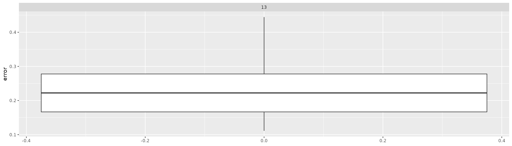

library(rfintext)
library(rfinstats)
library(dplyr)
library(tidyr)
library(tidytext)
library(xgboost)
library(caret)
library(topicmodels)
library(quanteda)
library(forcats)
library(purrr)
library(future)
library(furrr)
plan(multisession, workers = availableCores(logical = FALSE) - 1)
y <- rfinstats::taantuvat |>
filter(kunta %in% unique(aspol$kunta)) |>
mutate(luokka = factor(if_else(suht_muutos_2010_2022 > 0, "kasvava", "taantuva")))
y
#> # A tibble: 66 × 5
#> kunta vaesto kokmuutos_2010_2022 suht_muutos_2010_2022 luokka
#> <chr> <int> <int> <dbl> <fct>
#> 1 Enontekiö 1876 -71 -3.78 taantuva
#> 2 Espoo 247970 60944 24.6 kasvava
#> 3 Eura 12507 -1278 -10.2 taantuva
#> 4 Hartola 3355 -814 -24.3 taantuva
#> 5 Hattula 9657 -266 -2.75 taantuva
#> 6 Helsinki 588549 80678 13.7 kasvava
#> 7 Huittinen 10663 -955 -8.96 taantuva
#> 8 Hyvinkää 45489 1527 3.36 kasvava
#> 9 Hämeenlinna 66829 1588 2.38 kasvava
#> 10 Iitti 7005 -557 -7.95 taantuva
#> 11 Imatra 28540 -3468 -12.2 taantuva
#> 12 Inkoo 5546 -225 -4.06 taantuva
#> 13 Joensuu 73305 4809 6.56 kasvava
#> 14 Juva 6962 -1295 -18.6 taantuva
#> 15 Järvenpää 38680 6922 17.9 kasvava
#> 16 Kaarina 30911 5088 16.5 kasvava
#> 17 Kalajoki 12562 -205 -1.63 taantuva
#> 18 Kauniainen 8689 1667 19.2 kasvava
#> 19 Kemiönsaari 7191 -749 -10.4 taantuva
#> 20 Kerava 34282 3843 11.2 kasvava
#> # ℹ 46 more rows
dtm <- aspol |>
preprocess_corpus(kunta) |>
corpus_to_dtm(kunta, LEMMA)
optimal_k <- c(6, 10, 16) # Visually selected based on mean topic coherence (see article 3)
ptm <- proc.time()
lda_models <- tibble(K = optimal_k) |>
mutate(
# LDA models
topic_model = future_map(
K, ~LDA(convert(dtm, to = "tm"), k = .), # LDA does not support quanteda dfm-format
.options = furrr_options(seed = TRUE)
),
# Theta matrix (gamma)
theta = map(
topic_model, \(x) {
tidy(x, matrix = "gamma") |>
rename(theta = gamma) |>
filter(document %in% y$kunta) |>
cast_dfm(document = document, term = topic, value = theta)
}
)
)
proc.time() - ptm
#> user system elapsed
#> 1.378 0.026 44.686
lda_models
#> # A tibble: 3 × 3
#> K topic_model theta
#> <dbl> <list> <list>
#> 1 6 <LDA_VEM> <dfm[,6]>
#> 2 10 <LDA_VEM> <dfm[,10]>
#> 3 16 <LDA_VEM> <dfm[,16]>
trainidx <- createDataPartition(y$suht_muutos_2010_2022, p = .7,
list = FALSE,
times = 1)
lda_models <- lda_models |>
mutate(
train = map(theta, \(x) {
dfm_subset(x, docname_ %in% y$kunta[trainidx])
}),
test = map(theta, \(x) {
dfm_subset(x, docname_ %in% y$kunta[-trainidx])
})
)
lda_models
#> # A tibble: 3 × 5
#> K topic_model theta train test
#> <dbl> <list> <list> <list> <list>
#> 1 6 <LDA_VEM> <dfm[,6]> <dfm[,6]> <dfm[,6]>
#> 2 10 <LDA_VEM> <dfm[,10]> <dfm[,10]> <dfm[,10]>
#> 3 16 <LDA_VEM> <dfm[,16]> <dfm[,16]> <dfm[,16]>
lda_models <- lda_models |>
mutate(
xgb_train = map(train, \(train) {
xgb.DMatrix(data = train, label = as.integer(y$luokka[trainidx]) - 1)
}),
xgb_test = map(test, \(test) {
xgb.DMatrix(data = test, label = as.integer(y$luokka[-trainidx]) - 1)
})
)
lda_models
#> # A tibble: 3 × 7
#> K topic_model theta train test xgb_train
#> <dbl> <list> <list> <list> <list> <list>
#> 1 6 <LDA_VEM> <dfm[,6]> <dfm[,6]> <dfm[,6]> <xgb.DMtr[,6]>
#> 2 10 <LDA_VEM> <dfm[,10]> <dfm[,10]> <dfm[,10]> <xgb.DMtr[,10]>
#> 3 16 <LDA_VEM> <dfm[,16]> <dfm[,16]> <dfm[,16]> <xgb.DMtr[,16]>
#> # ℹ 1 more variable: xgb_test <list>
gs <- tidyr::expand_grid(
booster = "gbtree",
eta = seq(0.01, 0.1, by = 0.2),
max_depth = seq(3, 7, by = 1),
gamma = seq(0, 4, by = 2),
subsample = seq(0.5, 1, by = 0.25),
colsample_bylevel = seq(0.5, 1, by = 0.25),
nrounds = seq(5, 55, by = 25),
# objective = "reg:squarederror",
objective = "binary:logistic"#,
# num_parallel_tree = 2,
# device = "cuda"
)
gs
#> # A tibble: 405 × 8
#> booster eta max_depth gamma subsample colsample_bylevel nrounds objective
#> <chr> <dbl> <dbl> <dbl> <dbl> <dbl> <dbl> <chr>
#> 1 gbtree 0.01 3 0 0.5 0.5 5 binary:logistic
#> 2 gbtree 0.01 3 0 0.5 0.5 30 binary:logistic
#> 3 gbtree 0.01 3 0 0.5 0.5 55 binary:logistic
#> 4 gbtree 0.01 3 0 0.5 0.75 5 binary:logistic
#> 5 gbtree 0.01 3 0 0.5 0.75 30 binary:logistic
#> 6 gbtree 0.01 3 0 0.5 0.75 55 binary:logistic
#> 7 gbtree 0.01 3 0 0.5 1 5 binary:logistic
#> 8 gbtree 0.01 3 0 0.5 1 30 binary:logistic
#> 9 gbtree 0.01 3 0 0.5 1 55 binary:logistic
#> 10 gbtree 0.01 3 0 0.75 0.5 5 binary:logistic
#> 11 gbtree 0.01 3 0 0.75 0.5 30 binary:logistic
#> 12 gbtree 0.01 3 0 0.75 0.5 55 binary:logistic
#> 13 gbtree 0.01 3 0 0.75 0.75 5 binary:logistic
#> 14 gbtree 0.01 3 0 0.75 0.75 30 binary:logistic
#> 15 gbtree 0.01 3 0 0.75 0.75 55 binary:logistic
#> 16 gbtree 0.01 3 0 0.75 1 5 binary:logistic
#> 17 gbtree 0.01 3 0 0.75 1 30 binary:logistic
#> 18 gbtree 0.01 3 0 0.75 1 55 binary:logistic
#> 19 gbtree 0.01 3 0 1 0.5 5 binary:logistic
#> 20 gbtree 0.01 3 0 1 0.5 30 binary:logistic
#> # ℹ 385 more rows
xgb_models <- expand_grid(select(lda_models, K), gs) |>
left_join(select(lda_models, K, data = xgb_train, test_data = xgb_test))
#> Joining with `by = join_by(K)`
xgb_models
#> # A tibble: 1,215 × 11
#> K booster eta max_depth gamma subsample colsample_bylevel nrounds
#> <dbl> <chr> <dbl> <dbl> <dbl> <dbl> <dbl> <dbl>
#> 1 6 gbtree 0.01 3 0 0.5 0.5 5
#> 2 6 gbtree 0.01 3 0 0.5 0.5 30
#> 3 6 gbtree 0.01 3 0 0.5 0.5 55
#> 4 6 gbtree 0.01 3 0 0.5 0.75 5
#> 5 6 gbtree 0.01 3 0 0.5 0.75 30
#> 6 6 gbtree 0.01 3 0 0.5 0.75 55
#> 7 6 gbtree 0.01 3 0 0.5 1 5
#> 8 6 gbtree 0.01 3 0 0.5 1 30
#> 9 6 gbtree 0.01 3 0 0.5 1 55
#> 10 6 gbtree 0.01 3 0 0.75 0.5 5
#> # ℹ 1,205 more rows
#> # ℹ 3 more variables: objective <chr>, data <list>, test_data <list>
ptm <- proc.time()
xgb_models <- xgb_models |>
mutate(model = pmap(select(xgb_models, -K, -test_data), xgb.train))
proc.time() - ptm
#> user system elapsed
#> 26.236 1.296 8.814
xgb_models
#> # A tibble: 1,215 × 12
#> K booster eta max_depth gamma subsample colsample_bylevel nrounds
#> <dbl> <chr> <dbl> <dbl> <dbl> <dbl> <dbl> <dbl>
#> 1 6 gbtree 0.01 3 0 0.5 0.5 5
#> 2 6 gbtree 0.01 3 0 0.5 0.5 30
#> 3 6 gbtree 0.01 3 0 0.5 0.5 55
#> 4 6 gbtree 0.01 3 0 0.5 0.75 5
#> 5 6 gbtree 0.01 3 0 0.5 0.75 30
#> 6 6 gbtree 0.01 3 0 0.5 0.75 55
#> 7 6 gbtree 0.01 3 0 0.5 1 5
#> 8 6 gbtree 0.01 3 0 0.5 1 30
#> 9 6 gbtree 0.01 3 0 0.5 1 55
#> 10 6 gbtree 0.01 3 0 0.75 0.5 5
#> # ℹ 1,205 more rows
#> # ℹ 4 more variables: objective <chr>, data <list>, test_data <list>,
#> # model <list>
xgb_models <- xgb_models |>
mutate(
error = map2_dbl(model, test_data, \(model, test_data) {
label = xgboost::getinfo(test_data, "label")
pred <- stats::predict(model, test_data)
err <- as.numeric(sum(as.integer(pred > 0.5) != label))/length(label)
err
})
)
xgb_models
#> # A tibble: 1,215 × 13
#> K booster eta max_depth gamma subsample colsample_bylevel nrounds
#> <dbl> <chr> <dbl> <dbl> <dbl> <dbl> <dbl> <dbl>
#> 1 6 gbtree 0.01 3 0 0.5 0.5 5
#> 2 6 gbtree 0.01 3 0 0.5 0.5 30
#> 3 6 gbtree 0.01 3 0 0.5 0.5 55
#> 4 6 gbtree 0.01 3 0 0.5 0.75 5
#> 5 6 gbtree 0.01 3 0 0.5 0.75 30
#> 6 6 gbtree 0.01 3 0 0.5 0.75 55
#> 7 6 gbtree 0.01 3 0 0.5 1 5
#> 8 6 gbtree 0.01 3 0 0.5 1 30
#> 9 6 gbtree 0.01 3 0 0.5 1 55
#> 10 6 gbtree 0.01 3 0 0.75 0.5 5
#> # ℹ 1,205 more rows
#> # ℹ 5 more variables: objective <chr>, data <list>, test_data <list>,
#> # model <list>, error <dbl>
xgb_models |> arrange(error)
#> # A tibble: 1,215 × 13
#> K booster eta max_depth gamma subsample colsample_bylevel nrounds
#> <dbl> <chr> <dbl> <dbl> <dbl> <dbl> <dbl> <dbl>
#> 1 6 gbtree 0.01 3 0 0.75 0.75 5
#> 2 6 gbtree 0.01 4 0 0.75 0.5 5
#> 3 6 gbtree 0.01 6 2 0.5 0.75 5
#> 4 6 gbtree 0.01 7 2 0.5 0.5 5
#> 5 6 gbtree 0.01 7 4 0.75 0.5 5
#> 6 10 gbtree 0.01 3 0 0.5 0.5 30
#> 7 10 gbtree 0.01 3 2 0.5 0.5 5
#> 8 10 gbtree 0.01 3 2 0.5 0.5 30
#> 9 10 gbtree 0.01 3 2 0.5 0.5 55
#> 10 10 gbtree 0.01 3 4 0.5 0.75 55
#> # ℹ 1,205 more rows
#> # ℹ 5 more variables: objective <chr>, data <list>, test_data <list>,
#> # model <list>, error <dbl>
xgb_models |>
ggplot(aes(x = error)) +
geom_boxplot() +
coord_flip() +
facet_wrap(~K)
xgb_models <- xgb_models |>
mutate(
feat_importance = map2(data, model, \(data, model) {
xgb.importance(feature_names = colnames(data),
model = model)
})
)
xgb_models
#> # A tibble: 1,215 × 14
#> K booster eta max_depth gamma subsample colsample_bylevel nrounds
#> <dbl> <chr> <dbl> <dbl> <dbl> <dbl> <dbl> <dbl>
#> 1 6 gbtree 0.01 3 0 0.5 0.5 5
#> 2 6 gbtree 0.01 3 0 0.5 0.5 30
#> 3 6 gbtree 0.01 3 0 0.5 0.5 55
#> 4 6 gbtree 0.01 3 0 0.5 0.75 5
#> 5 6 gbtree 0.01 3 0 0.5 0.75 30
#> 6 6 gbtree 0.01 3 0 0.5 0.75 55
#> 7 6 gbtree 0.01 3 0 0.5 1 5
#> 8 6 gbtree 0.01 3 0 0.5 1 30
#> 9 6 gbtree 0.01 3 0 0.5 1 55
#> 10 6 gbtree 0.01 3 0 0.75 0.5 5
#> # ℹ 1,205 more rows
#> # ℹ 6 more variables: objective <chr>, data <list>, test_data <list>,
#> # model <list>, error <dbl>, feat_importance <list>
xgb_models |>
select(K, feat_importance) |>
unnest(feat_importance) |>
mutate(Feature = factor(as.integer(Feature))) |>
ggplot(aes(x = Feature, y = Gain)) +
geom_boxplot() +
labs(title = "Feature importance", x = "Feature (topic)") +
facet_wrap(~K)